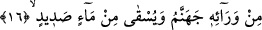
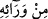

Her inatçı zorbayı tehdid ediyorsun ha!
Benim işte bahsettiğin o inatçı zorba!
Rabbinin huzûruna vardığında, haşr günü
‘Ya Rab!’ dersin, ‘Velid parçalamıştı beni!”
Çok geçmeden feci bir şekilde öldürüldü ve başı önce sarayına sonra da şehrin
surlarına asıldı.”
İnsânü’l-uyûn’da şöyle der: Osman (r.a.)’ın öldürülmesine Mervan sebep oldu.
Mervan’ın oğlu Abdülmelik de Abdullah b. Zübeyr (r.a.)’ın öldürülmesine sebep oldu.
Abdülmelik’in oğlu Yezid’in oğlu Velid’den de çok menfur işler meydana geldi.”
Fakir (Bursevî) der ki: Rasûl-i Ekrem (s.a.) Ümeyyeoğulları’nı rüyasında maymun
şeklinde görmüş “Yazıklar olsun Ümeyye oğullarına!” diye onları üç kez lânetlemiştir.
[8] Çok azı müstesnâ onlardan hayırlı ve sâlih bir icraat görülmemiştir. Ebû Müslim
Horasânî’nin yardımıyla da devletleri Abbâsîler’e geçmiştir. Hz. Peygamber (a.s.)
Abbâsîler’in minberini yükselttiklerini görmüş ve bu kendisini mutlu etmiştir. Bu
konunun geniş izahı siyer ve tarih kitaplarında mevcuttur.
16. Ardından da (o inatçı zorbaya) cehennem vardır; kendisine irinli su
içirilecektir.
“Ardından da (o inatçı zorbaya) cehennem vardır” Bu bütün inatçı zorbaların
dünyâdaki durumlarını tavsif eden bir ifâdedir.
“__WORD__, ‘karşısında ve önünde’ mânâsındadır. Çünkü o cehennem için hazırlanmıştır.
Dünyâda iken cehennemin hemen kenarında durmaktadır, âhirette ise cehenneme
atılacaktır. Ya da ‘hayâtının ardında’ demektir. O zaman bu ölüm sonrasından ibârettir.
Nitekim Kâşifî şöyle der: “Ondan sonra o kâfirin yeri cehennemdir. Yâni haşr gününde
o kâfirin dönüp varacağı yer cehennem olur.”
“Verâ” kelimesinin asıl mânâsı, senden gizli, örtülü ve perdeli kalan durumlardır. Zıt
mânâlı kelimelerden değildir. İki zıt şeyin de doğru olacağı umumî şeylerde kullanılır.
Bu kelime, ön ve arka mânâsında mekân zarfıdır. Bazen de müsteâr olarak zaman zarfı
yerine kullanılır.
Sanki ‘Peki o zaman ne olacak?’ diye bir soru sorulmuş ve şöyle cevap verilmiştir:
“Kendisine irinli su içirilecektir.” Bu su, özel bir su olup bilinen sulardan değildir.
“Sadîd (irin)”, kanla karıştırılmış kusmuk ya da cehennemliklerin cesedlerinden,
zinâkârların tenâsül âletlerinden akan sıvılardır. Bu suyun dehşetini ortaya koymak ve